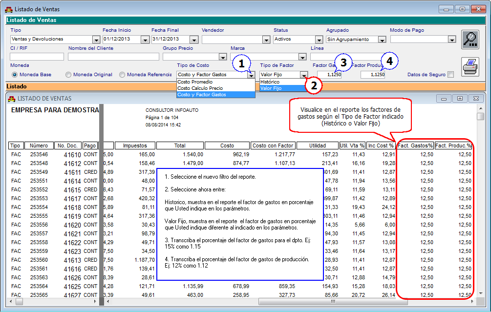

|
Menú Ventas |
  
|
|
Menú Ventas |
|
Inventario Virtual en la Red (IVR)
Desde el Módulo de Repuestos "Menú Ventas" opción >>Consulta de Productos>>, podrá visualizar la disponibilidad de todos y cada uno de los productos consultados en la red de concesionario de la misma marca, siempre y cuando estén suscrito al servicio que ofrece la aplicación Infoauto para la Publicación del Inventario o IVR (Inventario Virtual en la Red), que se configura en "Menú Inventario" opción >>Publicación de Inventario>>Generar Disponibilidad para la Red>>.
Figura. Consulta de Producto con IVR
Desde el Módulo de Repuestos "Menú Ventas" opción >>Consulta de Productos>>, podrá visualizar ahora las asociaciones de un código de parte con cada proveedor, las asociaciones de un código de parte con un código unificado, y los proveedores que utilizan un mismo código unificado según una lista de precios.
Figura. Consulta de Producto por Asociación de Códigos
Descripción de las Opciones de Consulta de Productos por Asociación de Códigos
Proveedores Asociados y Su Código |
Ir a "Menú Inventario" opción >>Códigos de Productos por Proveedor >> |
Productos con Este Código Unificado |
Ir a "Menú Inventario" opción >>Códigos Unificados y Clasificadores>> |
Productos con Este Código Unificado (Lista P.) |
Ir a "Menú Compras" opción >>Lista de Precios de Proveedores>> |
Ventas con Factor de Gastos para el Departamento y con Factor de Gastos de Producción
Desde el Módulo de Repuestos "Menú Ventas" opción >>Listados y Consultas>>Ventas>>, podrá disponer del reporte de ventas y devoluciones de repuestos con unas mejoras referentes a la aparición del factor de gastos para el departamento y el factor de gastos de producción.
Figura. Listado de Ventas

Gerencial con Factor de Gastos por Departamento y Factor de Gastos de Producción
Desde el Módulo de Repuestos "Menú Ventas" opción >>Listados y Consultas>>Reporte Gerencial>>, podrá disponer del reporte de facturación de repuestos con unas mejoras referentes a la aparición del factor de gastos para el departamento y el factor de gastos por producción.
Figura. Reporte Gerencial de Ventas
Volver a Índice de Módulo Administrativo
Volver al Índice de Módulos Operativos